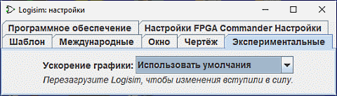

Вкладка Экспериментальные
¨
Эти настройки включают возможности, которые считаются экспериментальными, включенные для налаживания обратной связи с пользователями.
- Ускорение графики: один из пользователей Logisim отметил, что добавление -Dsun.java2d.d3d=True к командной строке кажется улучшает производительность графики Logisim, заставляя его использовать аппаратное ускорение графики. Этот выпадающий список пытается настроить Logisim так, чтобы эта возможность была включена; сообщения о том, влияет ли этот список на производительность, будут приветствоваться. Это не будет иметь никакого эффекта, пока Logisim не будет перезапущен.
Далее: Параметры командной строки.